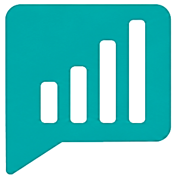

Design, deployment and optimisation of Planning Analytics models — from initial design through to rollout.
Connected data and interactive dashboards that unlock real-time insight for faster decision-making.
Centralised data and automated workflows with SQL, Python and more — less time compiling, more time deciding.
Onboarding programmes, live coaching and video libraries that help teams adopt new tools with confidence.
Reliable, SLA-based support with fast turnaround and expert assistance to keep your analytics running.
Enterprise planning, budgeting, and forecasting with IBM Planning Analytics — the enterprise performance management solution powered by TM1.
IBM Planning Analytics (powered by TM1) is a business planning and analytics platform that enables organizations to take smarter, data-driven decisions faster. It combines financial and operational planning into a single solution, giving you agility and consistency for performance management.
Enterprise BI Reporting & Dashboards with Microsoft Power BI — the industry-leading business intelligence and data visualization tool.
Microsoft Power BI is a business intelligence (BI) and data visualization platform that helps organizations turn raw data into clear, actionable insights through interactive reports and dashboards.
Microsoft Power BI provides a complete business intelligence solution that empowers your team to analyze, visualize, and share insights that drive success.
With Power BI, move beyond spreadsheets to an intelligent, interactive, and scalable reporting platform.
We help organizations design, deploy, and optimize IBM Planning Analytics models to simplify planning and empower data-driven decisions.
Every build starts with your existing process, not the software's defaults.
Talk to us about TM1We help organizations connect data, build interactive dashboards, and unlock real-time insights for smarter, faster decision-making.
Self-serve by design: filter, drill down and extend without calling us every time.
Talk to us about Power BIWe unlock the full power of Planning Analytics and Power BI by centralizing your data and automating workflows with SQL, Python, and more — so teams spend less time on spreadsheets and more time on insights that drive decisions.
We provide hands-on training and change management for Planning Analytics and Power BI through onboarding programs, live coaching, and video libraries — helping your teams adopt new tools confidently and drive maximum value from your data.
Tailored to role: a budget holder and a model builder need very different things from the same system.
Talk to us about trainingReliable, SLA-based support for new and existing models, with fast turnaround, proactive guidance, and expert assistance to keep your analytics team running seamlessly.
We help organizations design, deploy, and optimize IBM Planning Analytics models to simplify planning and empower data-driven decisions. Planning Analytics is the engine behind serious financial planning — budgeting, forecasting, and multi-dimensional modelling at scale.
We help organizations connect data, build interactive dashboards, and unlock real-time insights for smarter, faster decision-making. Power BI is where your data becomes a story people actually understand.
Used separately, planning tools and BI dashboards often tell two different stories. We connect them deliberately — so what you forecast in Planning Analytics is the same number you see in your Power BI dashboard, with no manual reconciliation in between.
Book a discovery session and we'll map the right entry point for your team.
Get in touch